Insertar 9 series adicionales
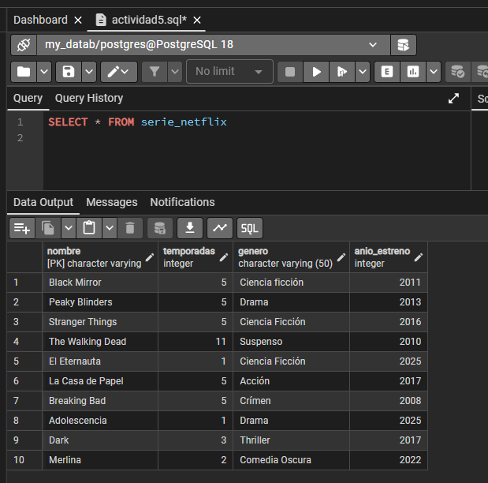Listar todas las series con más de 3 temporadas ordenadas por año de estreno descendente
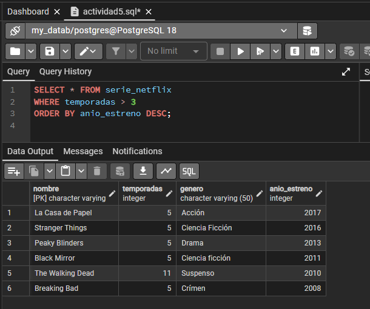Listar el año de la serie más antigua
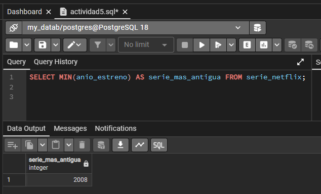Listar el año de la serie más nueva
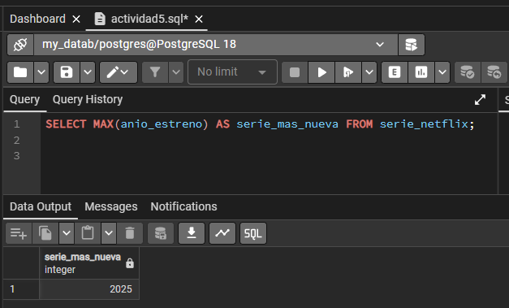Mostrar el promedio de año de estreno de las series
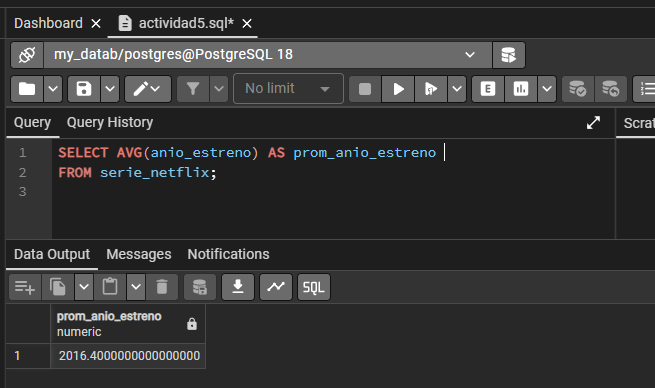Listar el promedio de temporadas de todas las series
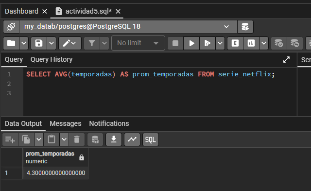Listar las series que tengan 1, 2, 4, 5 o 7 temporadas
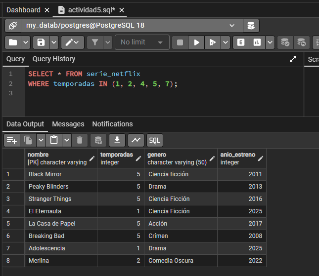Listar las series que NO tengan 1, 2, 4, 5 o 7 temporadas
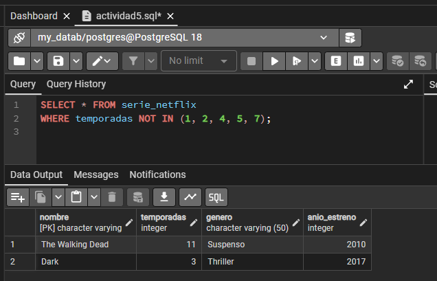Borrar todas las series con año de estreno superior a 2010
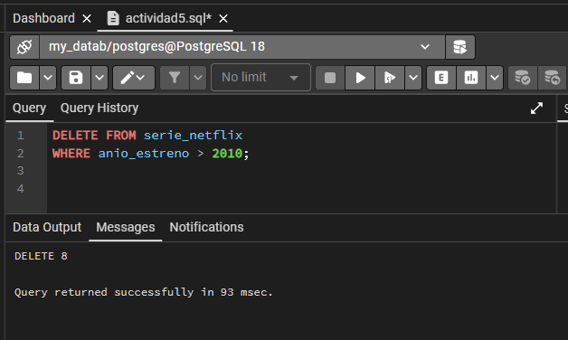Reinsertar los datos recién borrados
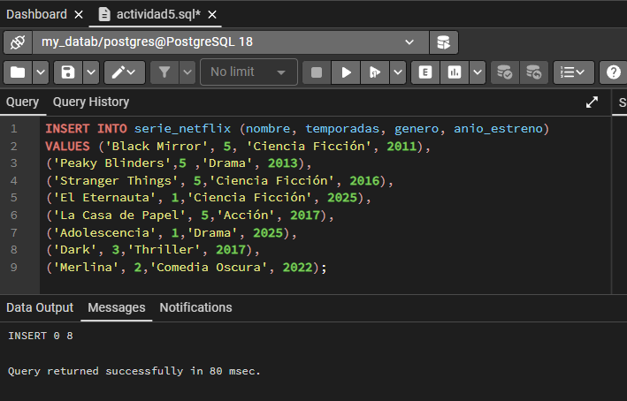Agregar la serie Doctor House
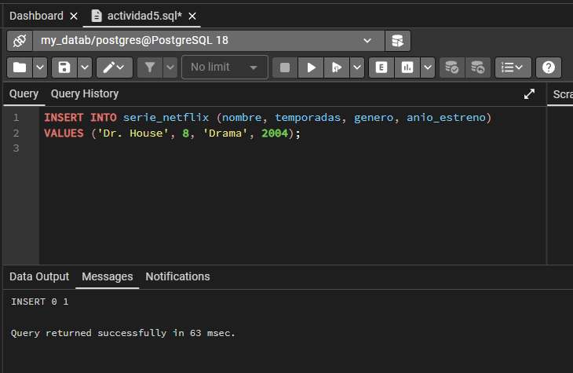Listar todas las series estrenadas entre 2005 y 2020
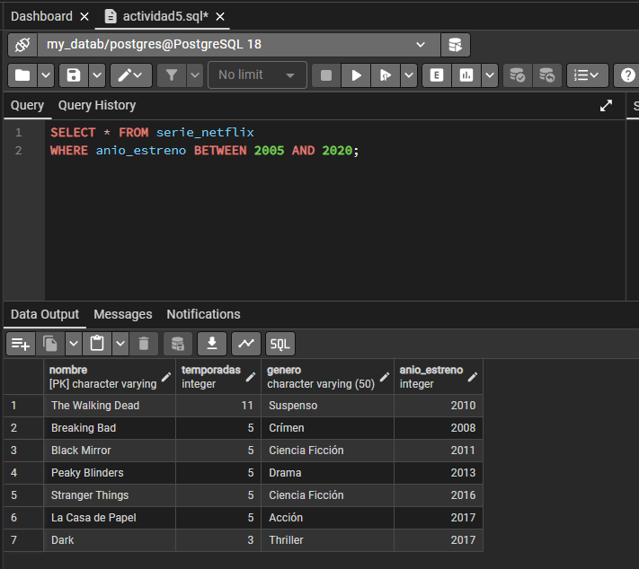Listar todas aquellas series con nombre comenzado en B o terminado en e
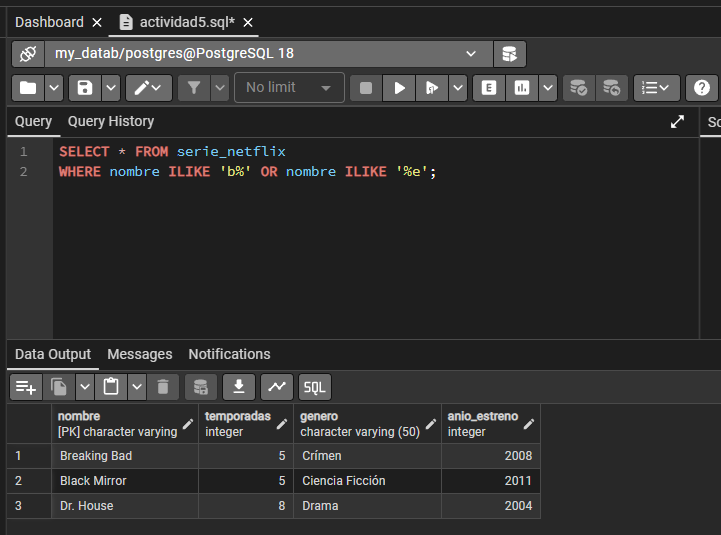Listar aquellas series cuyo año de entreno más la cantidad de temporadas excede 2010
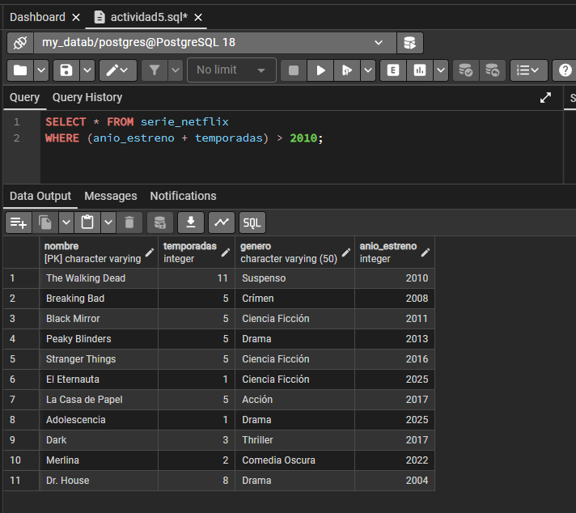